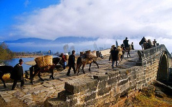
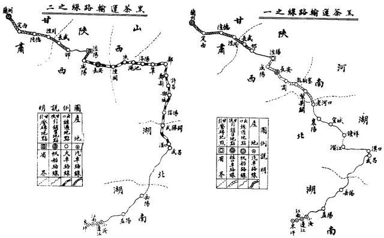
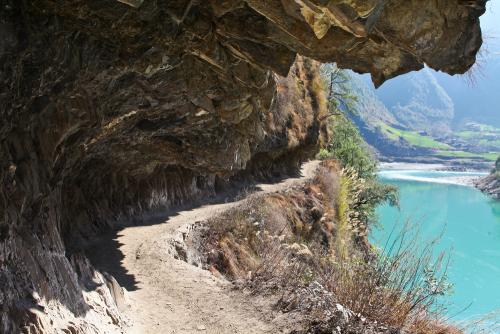

茶马古道

历史
茶马古道，是我国历史上最古老的对外经贸商路，萌芽于2000多年前的汉代，正式形成于唐宋时期。茶马古道的路线有2条：川藏茶马古道与滇藏茶马古道。在古代，茶马古道作为重要的贸易通道而存在着，而在海、陆、空交通发达的今天，它的价值更重要的体现在了文化上。

地图
茶马古道是指存在于中国西南地区，以马帮为主要交通工具的民间国际商贸通道，是中国西南民族经济文化交流的走廊。茶马古道分川藏线、滇藏线两路。

残留
雾里村最有名气的，就是那段全国现存的唯一“活着的”的茶马古道。 茶马古道有着一千多年历史，是迄今为止保留得较为完好的茶马古道。 2004年，著名导演田壮壮的首部纪录片《德拉姆》曾拍过这里的茶马古道。 茶马古道在云南的许多地方已被现代交通公路所取代，唯有丙中洛镇通往西藏林芝地区察隅县的马帮队今天仍在古道上穿行。

遗失
人们熟知的茶马古道早已淹没在历史烟云中，古道上的马蹄声已然随着历史的沉淀渐渐沉默。然而，茶马古道作为一条人文精神的承载之路，终为历史所铭记：一代代茶商马夫，既是贸易经商的生意人，也是开辟茶马古道的探险家；一条条茶马古道，既是运输通道，也是连接内陆与边塞、中国与世界的纽带。